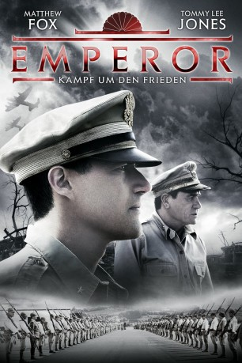
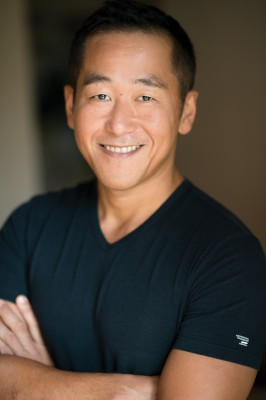

#8225 Emperor - Kampf um den Frieden
 
 IMDB-Wertung: 6.5 / 10
IMDB-Wertung: 6.5 / 10  Metascore: 0
Metascore: 0 
Auf Befehl von General Douglas MacArthur wird Japan-Experte General Bonner Fellers in das zerstörte Tokio der unmittelbaren Nachkriegszeit geschickt. Dort soll er nach Japans Hauptkriegsverbrechern fahnden und die Lage des Kaisers von Japan untersuchen. Obwohl Kaiser Hirohito von seinem Volk sehr geschätzt wird, werden ihm schwere Kriegsverbrechen vorgeworfen. Fellers soll dabei helfen, eine Entscheidung von besonderem Ausmaß zu treffen: Soll der Kaiser vor Gericht gestellt und zum Tode verurteilt werden? Nebenbei will Fellers seine alte Liebe Aya wiederfinden, eine Austauschstudentin, die er Jahre zuvor in den USA getroffen hat. Bei seiner Ergründung der japanischen Geschichte und der Suche nach seiner großen Liebe stellt sich Fellers grundlegende Fragen der Humanität und Weisheit, um am Ende eine Entscheidung zu treffen, die beide Nationen für immer verändern wird.
Jahr: 2012
Dauer: 105 Minuten
FSK: 16
Land: Japan Studio: Ascot Elite Entertainment GroupTonspuren: DTS - ,
Untertitel: Deutsch, Englisch,
Auflösung: 1080p (1920x816) Größe: 9297 MB
Genre: Drama, Geschichte
Regisseur: Peter Webber
Drehbuch: Vera Blasi
Soundtrack: Alex Heffes
Darsteller:
 Matthew Fox als General Bonner Fellers
Matthew Fox als General Bonner Fellers Tommy Lee Jones als General Douglas MacArthur
Tommy Lee Jones als General Douglas MacArthur- Eriko Hatsune als Aya Shimada
 Masayoshi Haneda als Takahashi
Masayoshi Haneda als Takahashi Kaori Momoi als Mitsuko Kajima
Kaori Momoi als Mitsuko Kajima- Colin Moy als General Richter
 Isao Natsuyagi als Teizaburo Sekiya
Isao Natsuyagi als Teizaburo Sekiya Aaron Jackson als Lt Col. Rogers
Aaron Jackson als Lt Col. Rogers- Nic Sampson als Lieutenant Red
 Will Wallace als CIC Commander
Will Wallace als CIC Commander Kelson Henderson als Adjutant to MacArthur
Kelson Henderson als Adjutant to MacArthur-  Shingo Usami als Emperor's Translator
 Jim McLarty als U.S. Aide
Jim McLarty als U.S. Aide- Lance Masa als Bar Patron #1
- Yuki Nagashima als Imperial Guard (uncredited)
- Gareth Ruck als Master Sergeant (uncredited)
- Toshiyuki Nishida als General Kajima
- Masatoshi Nakamura als Prince Konoe
 Masatô Ibu als Koichi Kido
Masatô Ibu als Koichi Kido- Takatarô Kataoka als Emperor Hirohito
- Shôhei Hino als Hideki Tojo
- Stephen Papps als Higgins
- Takanori Higuchi als Head Palace Guard
- Ingrid Park als Woman Hall Proctor
- Yôko Narahashi als Head Teacher
- Kazuki Hayakawa als Akio
- Kaito Narita als Eiji
- Michaela Rooney als Jean MacArthur
- Hideko Yanagida als Old Woman in Restaurant
- Paul Gittins als Older Officer
- Stephen Hall als General Eichelberger
- Kengo Hasuo als Imperial Butler
- Kuni Hashimoto als Minister Anami
- David Aston als U.S. Officer
- Yoshiyuki Yamaguchi als Imperial Guard 1
- Daigoro Yamada als Imperial Guard 2
- Nichita Tanabe als Imperial Guard 3
- Ryoichiro Yonekura als Imperial Guard 4
- Koji Mizuki als Homeless Japanese Vet
- Nobuko Nakanishi als Homeless Woman
- Kona Kelly als Japanese Toddler
- Toru Ishida als Bar Patron #2
- Motoshige Nagai als Bar Patron #3
- Masaya Kubota als Japanese Soldier (uncredited)
- Wiebe Marinus als IO Coporal (uncredited)
Datei: X:\HD-Eastern-Modern(A-M)\Emperor - Kampf um den Frieden (2012, FSK16, 1920x816).mkv seit 11.02.2018
Festplatte: HD Eastern+Western
 Es gibt insgesamt 104 Filme in der Gruppe 'HD-Eastern-Modern(A-M)'
Es gibt insgesamt 104 Filme in der Gruppe 'HD-Eastern-Modern(A-M)'